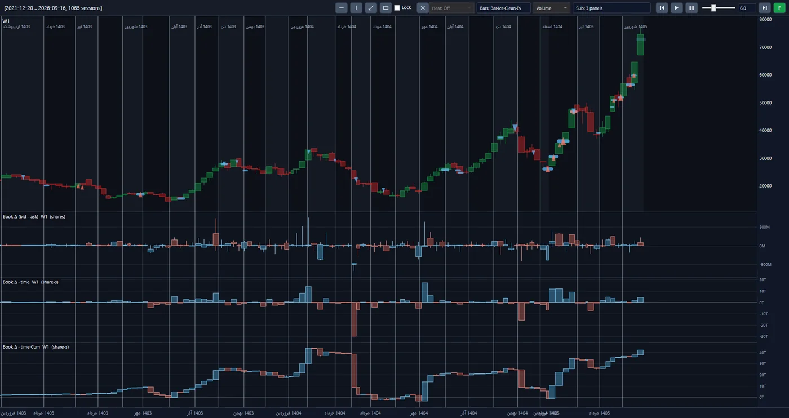
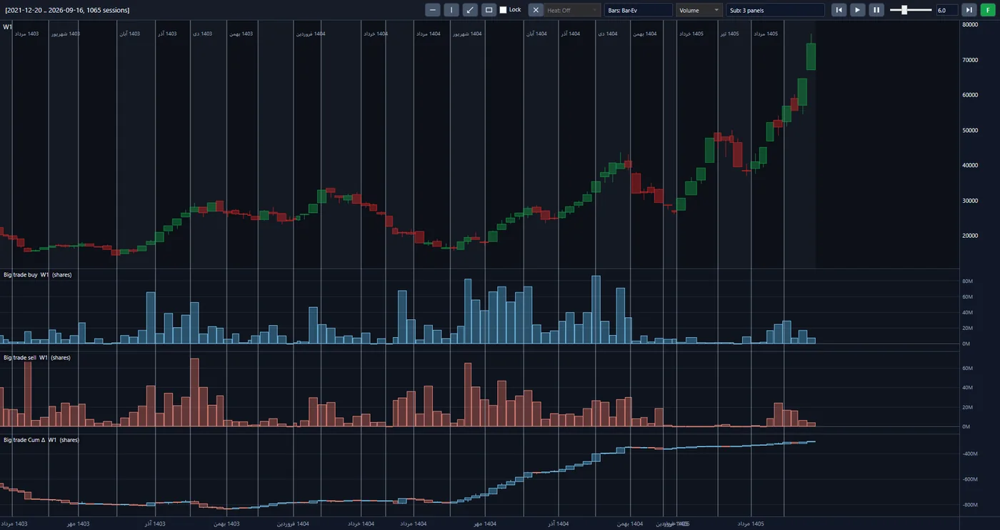
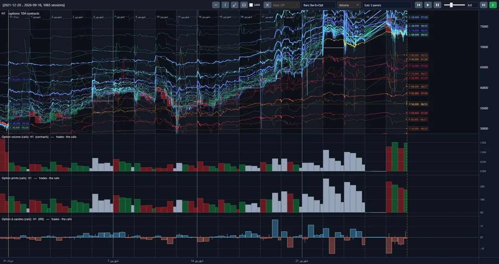

Introduction
Price is the last piece of news to reach the market. Before it, someone decided, placed an order, pulled an order, moved money. On the Tehran Stock Exchange this happens millions of times a day, and almost everyone reads only the last line.
We decided to read the whole story. The TSETMC project has gathered and rebuilt eleven years of Iran's capital market — trade by trade, order by order — for 1,148 symbols. We build and test our models on that history. The destination is an algorithmic money-management fund: capital run not on hunches or hearsay, but by reading the live flow of orders.
One strategy grew out of this infrastructure into a project of its own: Gold ETF Arbitrage.
Inside the platform
These are real screens from the project's analysis platform, not mock-ups. Each view shows the same raw market data from a different angle. Click the image to enlarge it.



Weekly price, and beneath it the gap between bid-side and ask-side volume in the book in three forms: raw, time-weighted, and cumulative.
The volume of large buys and large sells each week, and the cumulative gap between the two, under the same price chart.
104 option contracts on one chart, with the volume, trade count and delta candles of the calls.
Approach
We don't look at the market from above; we start at its floor and build upward. An investment decision is made in three stages, each standing on the shoulders of the one before.
-
From order flow to the stock
We read the finest data the market produces to see what stands behind each stock's move: money that has come to stay, or a wave passing through. The output of this stage is a clear numerical assessment of each stock's state.
-
From the stock to the sector
When the stocks of a sector are read together, a larger picture appears: which sector money has turned toward, and which it has turned away from.
-
From the sector to the portfolio
Sector weights and the chosen stocks within each build the portfolio. Every unit of it has a reason, and that reason can be traced down to the floor of the market.
Alongside those three stages sits the options market. It is young in Iran and most participants still walk past it. We have taken it seriously from today, and have made it possible to analyse it alongside the price of the underlying stock.
What stands out
-
A decision that neither fears nor covets.
The Iranian market runs on emotion: a queue of buyers makes everyone greedy, a queue of sellers drives everyone away. Most losses are made in exactly those two moments. The algorithm is equally calm on both days, and every trade comes from a rule written and tested beforehand — not from the mood of the day.
-
Eleven years of testing, before your money.
No rule reaches capital unless it has stood against eleven years of real market: the great boom of 2020, the fall that followed, and the long grinding years of stagnation. We make our mistakes on history, not on your capital.
-
A return you could withdraw, not one you can only display.
An ordinary backtest assumes every order fills instantly at the quoted price. The real market is not that kind. Our simulator rebuilds the exchange's own order-execution engine: orders queue, wait their turn, fill in part or stay at the back of the queue. The figures we report have been through that simulator.
-
We know the queue — on the way in and on the way out.
The investor's nightmare in this market is being stuck behind a sell queue: an asset that exists on paper and cannot be sold. Queues, price limits and true market depth are in our model from the first line. Imported tools are blind to all three.
-
A portfolio resting on no single stock, sector or person.
The whole market — stocks, funds and options alike — is measured each day against one framework, and the portfolio is drawn from across every sector. The knowledge lives in the system, not in the head of a star analyst who may not be here tomorrow.
-
Only official market data — and a reason for every decision.
No rumours, no back-channel news, no channels and signals. The algorithm's input is what the exchange itself recorded. And for any trade we can say why it happened and trace it back to the raw data.
The road ahead
-
Done
The data infrastructure, the analytics engine and the execution simulator are built and tested. That infrastructure cannot be bought; it takes years, and we have put them in.
-
Done
The first stage: the order-flow indicators for each stock are built and measured.
-
Now
The sector stage, portfolio construction, and a multi-year backtest across the whole market.
-
Final step
Connecting to live data and running capital algorithmically, in fund form.
Technology
The processing core is written in Python, while the computation engine and the execution simulator are in C#. Processing is parallel: the complete history of a heavily traded symbol is ready in under ninety seconds. No change is accepted without passing the automated test suite.